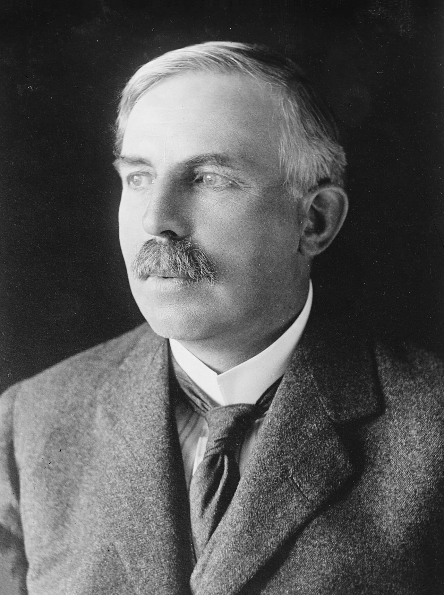
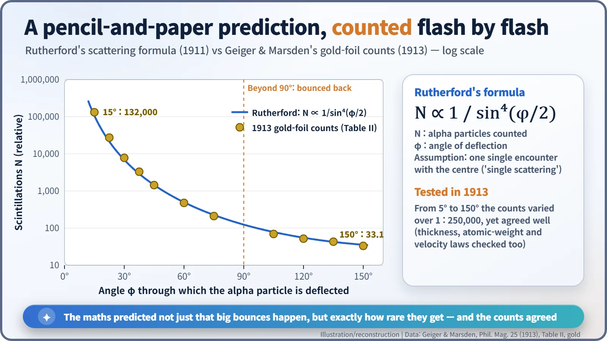
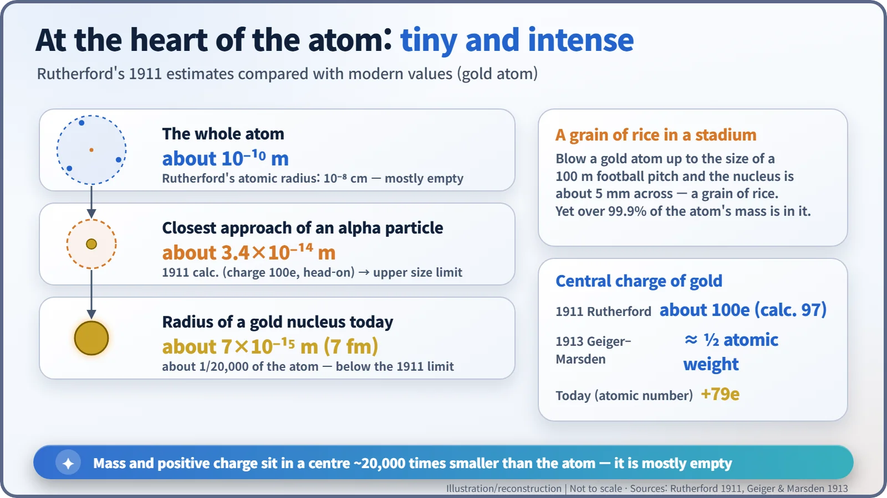

Nuclear History · 026
Mostly Empty Space — Rutherford Discovers the Atomic Nucleus (1911)
A few alpha particles bounced back, and two years of pencil-and-paper work revealed a tiny, massive centre inside a mostly empty atom.
In 1909 Geiger and Marsden saw a few alpha particles bounce straight back off thin metal. Over the next two years Ernest Rutherford worked out, with pencil and paper, what that meant: almost all of an atom's mass and positive charge sit in a tiny central point, and the rest is nearly empty space. His 1911 paper, and the precise 1913 measurements that confirmed it, gave us the atomic nucleus.
A short item on page 3
On 9 March 1911, page 3 of the Manchester Guardian carried a short report from a learned society. Two evenings earlier, at the Manchester Literary and Philosophical Society, Professor Ernest Rutherford (1871–1937) had given a talk which, the paper said, "involved a penetration of the atomic structure". It was not front-page news. Yet that talk is where the "nuclear" in nuclear energy really begins. [3]

A two-year-old puzzle: one in 8,000
The story starts in 1909. In Rutherford's Manchester laboratory, Hans Geiger (1882–1945) and the undergraduate Ernest Marsden (1889–1970) fired alpha particles at thin sheets of metal. Most went more or less straight on, but roughly one in 8,000 of those striking a platinum plate came bouncing back. The experiment itself is a story of its own; here we follow the question it left behind. What on earth inside an atom could do that? [1]
The accepted picture at the time was J. J. Thomson's atom: positive charge spread thinly through the whole atom, with electrons embedded in it. Through an atom like that, a heavy, fast alpha particle should only ever be nudged a tiny amount. The chance of all those small nudges adding up to a turn of more than 90° was, for practical purposes, zero.
Taking the atom apart with a pencil
Rutherford was famous as an experimenter, but this time he reached for pencil and paper. Around January 1911 he wrote to a colleague that he was "devising a new atom". His starting point was a change of viewpoint: a large bounce is not the sum of many small deflections but the result of one single, violent encounter. In the words of his paper, "It seems reasonable to suppose that the deflexion through a large angle is due to a single atomic encounter." [1] [3]
To turn a particle round in one go, the atom must contain an extremely strong electric field, which means its charge must be packed into a very small space. Rutherford placed a "central charge" at the middle of the atom, treated it as a point, and worked out the path of an alpha particle sweeping past it. It is the same mathematics as a comet swinging round the Sun, except that the force pushes instead of pulls.
The numbers were strikingly concrete. If the central charge of a gold atom is taken as about 100 times the basic unit of charge, an alpha particle heading straight at it stops and turns back about 3.4 × 10⁻¹² cm from the centre. That is thousands of times smaller than the radius of the atom itself (about 10⁻⁸ cm), so the centre must be smaller still. [1]
The formula predicted how rare the bounces should be
The real strength of the model was a numerical prediction. The number of particles deflected through an angle φ should vary as 1/sin⁴(φ/2); it should be proportional to the thickness of the foil and to the square of the central charge; and it should fall with the fourth power of the particles' speed. In other words, the theory said not only that big bounces happen, but exactly how quickly they become rarer as the angle grows.
Once again the checking fell to Geiger and Marsden. In a paper published in the Philosophical Magazine in April 1913, they counted scintillations from 5° all the way to 150°. Over that range the counts changed by a factor of 250,000, yet they stayed "in good agreement with the theory". The central charge came out at about half the atomic weight, which they judged "probably correct to 20 per cent". [2]

A grain of rice in a stadium
Modern measurements put the radius of a gold nucleus at about 7 femtometres (7 × 10⁻¹⁵ m), roughly one twenty-thousandth of the atom. Blow a gold atom up to the size of a 100-metre football pitch and the nucleus would be about 5 mm across, the size of a grain of rice. Yet more than 99.9% of the atom's mass sits in that grain. The rest is almost empty space, visited by a few electrons.

Three things the 1911 paper did not say
People often say that Rutherford "announced the nucleus" in 1911, but the original paper is far more cautious.
- No "nucleus". The word does not appear in the paper. Throughout, it speaks of a "central charge"; Rutherford began using "nucleus" around 1912.
- No sign. He could not say whether the charge was positive or negative. His results, he wrote, "are independent of the sign of the central charge", and for convenience he simply assumed it was positive.
- No stability. He set aside how such an atom could hold together: "The question of the stability of the atom proposed need not be considered at this stage." He said little about where the electrons were, beyond mentioning the Japanese physicist Hantaro Nagaoka's 1904 "Saturnian" atom. The textbook image of electrons circling like planets is a later simplification.
Even the date has a wrinkle. Most histories give 7 March 1911 for the Manchester talk, but a footnote in the paper itself says a brief account was given to the society "in February, 1911". And there is a much-repeated story that Rutherford walked into Geiger's room one day and announced that he now knew what the atom looked like. It may well be true, but it is a story often told rather than one with a clear first-hand source. [1] [3]
A quiet debut, a loud aftermath
At first the reaction was muted; the nuclear atom created no great stir among scientists or the public. It also had an obvious problem. According to classical physics, an electron circling a nucleus should radiate light, lose energy and spiral inwards almost at once. The model had no answer. [3]
The person who picked up that problem was a young Dane, Niels Bohr (1885–1962), who arrived in Manchester in March 1912. In 1913 he combined Rutherford's mostly empty atom with quantum ideas to build a new atomic model. In the same year Antonius van den Broek suggested that the charge of the nucleus equals an element's position in the periodic table, an idea that grew into the atomic number. The stage on which all of nuclear physics and nuclear engineering would play out had first appeared at the tip of a pencil.